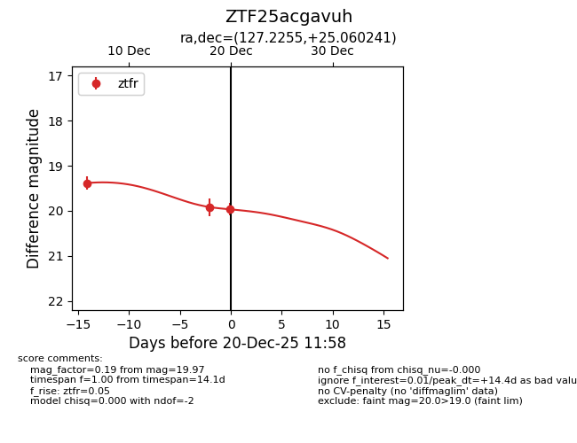
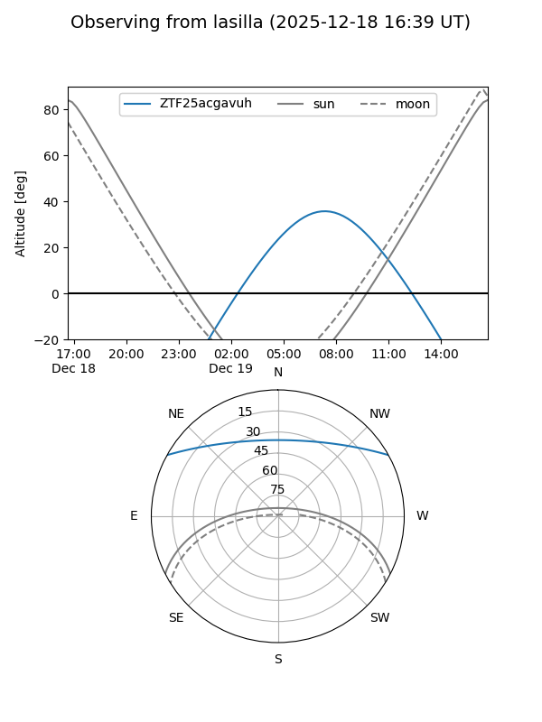
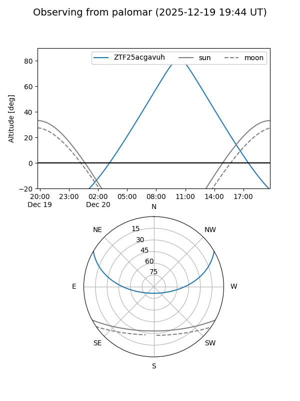
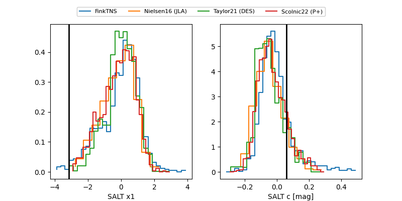

ZTF25acgavuh
Target ZTF25acgavuh at 2025-12-18 13:07
Aliases and brokers:
FINK: fink-portal.org/ZTF25acgavuh
Lasair: lasair-ztf.lsst.ac.uk/objects/ZTF25acgavuh
ALeRCE: alerce.online/object/ZTF25acgavuh
alt names
ZTF25acgavuh (ztf,fink_ztf)
Coordinates:
equatorial (ra, dec) = 127.2255,+25.06024
equatorial (HMS+DMS) = 08:28:54.12,+25:03:36.87
galactic (l, b) = (198.8783,+31.71902)
Photometry
last ztfr=19.92
2 ztfr detections
Lightcurve

Visibility


Additional plots
